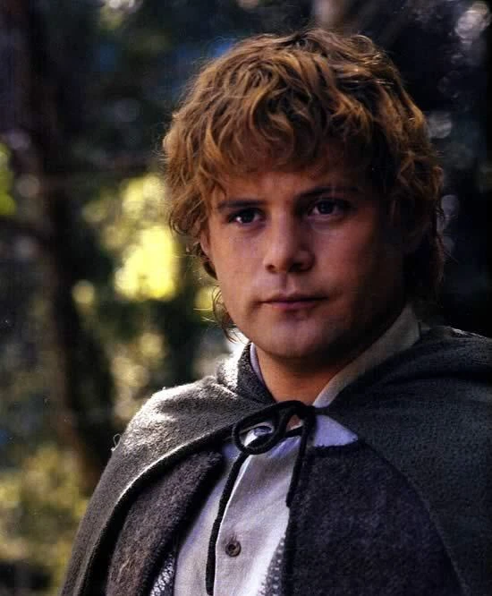
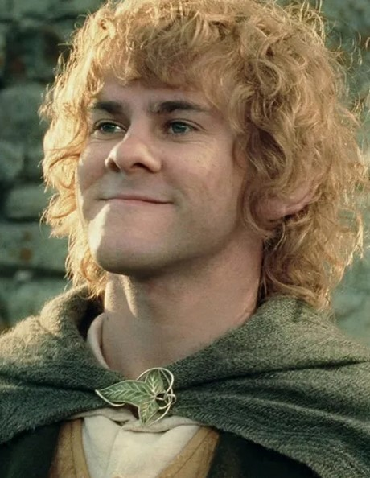
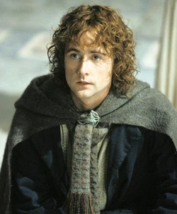
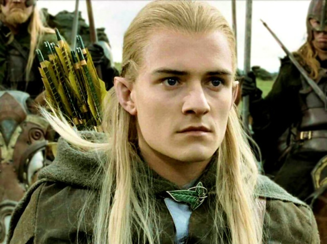
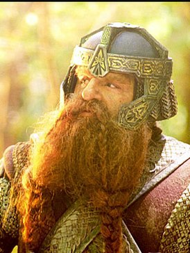
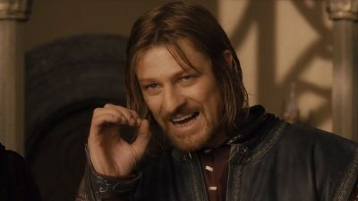
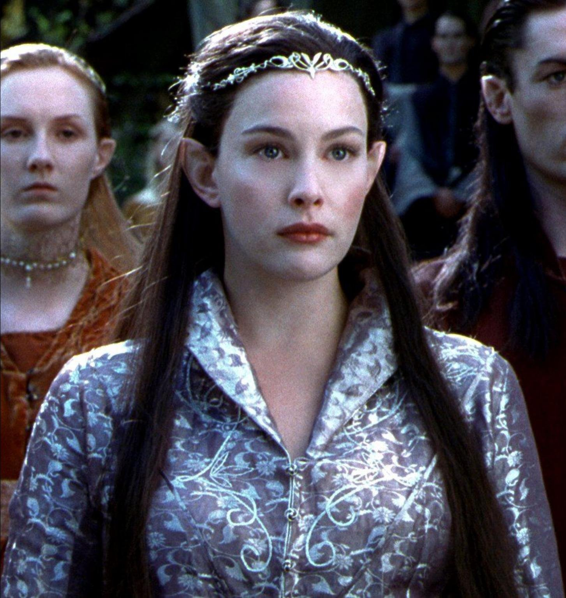

| Frodo's friends: | ||
|---|---|---|
| Sam | Merry | Pippin |
 Strider Strider |
Legolas | Gimli |
 Gandalf Gandalf |
Boromir | Arwen |
Prologue
The prologue explains that the work is "largely concerned with hobbits", telling of their origins in a migration from the east, their habits such as smoking "pipe-weed", and how their homeland the Shire is organised. It explains how the narrative follows on from The Hobbit, in which the Hobbit Bilbo Baggins finds the One Ring, which had been in the possession of Gollum.
Book I: The Ring Sets Out
Bilbo celebrates his eleventy-first (111th) birthday and leaves the Shire suddenly, passing the Ring to Frodo Baggins, his cousin[e] and heir. Neither Hobbit is aware of the Ring's origin, but the wizard Gandalf suspects it is a Ring of Power. Seventeen years later, in "The Shadow of the Past", Gandalf confirms to Frodo that the Ring is the one lost by the Dark Lord Sauron long ago and counsels Frodo to take it away from the Shire. Gandalf leaves, promising to return by Frodo's birthday and accompany Frodo on his journey, but fails to do so. Frodo sets out on foot, offering a cover story of moving to Crickhollow, accompanied by his gardener Sam Gamgee and Frodo's cousin Pippin Took. They are pursued by mysterious Black Riders, but meet a passing group of Elves led by Gildor Inglorion, whose singing to Elbereth wards off the Riders. The Hobbits spend the night with them, then take an evasive shortcut the next day, and arrive at the farm of Farmer Maggot, who takes them to Bucklebury Ferry, where they meet their friend Merry Brandybuck. When they reach the house at Crickhollow, Merry and Pippin reveal they know about the Ring and insist on travelling with Frodo and Sam. They decide to try to shake off the Black Riders by cutting through the Old Forest. Merry and Pippin are trapped by Old Man Willow, an ancient tree who controls much of the forest, but are rescued by Tom Bombadil. Leaving the refuge of Tom's house, they get lost in a fog and are caught by a barrow-wight in a barrow on the downs, but Frodo, awakening from the barrow-wight's spell, calls Tom Bombadil, who frees them and equips them with ancient swords from the barrow-wight's hoard. The Hobbits reach the village of Bree, where they encounter a Ranger named Strider. The innkeeper gives Frodo a letter from Gandalf written three months before which identifies Strider as a friend. Knowing the riders will attempt to seize the party, Strider guides the Hobbits through the wilderness toward the Elven sanctuary of Rivendell. On the way, the group stops at Weathertop, a hill. While there, they are again attacked, though by only five of the nine Black Riders. Their leader wounds Frodo with a cursed blade. After fighting them off, Strider treats Frodo with the herb athelas, and is joined by the Elf Glorfindel, who has been searching for the party. Glorfindel rides with Frodo, now deathly ill, toward Rivendell. The Black Riders pursue Frodo, but when they enter the Ford of Bruinen, they are swept away by flood waters summoned by Elrond.
Book II: The Ring Goes South
Frodo recovers in Rivendell under Elrond's care. Gandalf informs Frodo that the Black Riders are the Nazgûl, Men from ancient times enslaved by Rings of Power to serve Sauron. The Council of Elrond discusses the history of Sauron and the Ring. Strider is revealed to be Aragorn, the heir of Isildur. Isildur had cut the One Ring from Sauron's hand in the battle ending the Second Age, but refused to destroy it, claiming it for himself. The Ring had been lost when Isildur was killed, finally ending up in Bilbo's possession after his meeting with Gollum, described in The Hobbit. Gandalf reports that the chief wizard, Saruman, has betrayed them and is now working to become a power in his own right. Gandalf was captured by him, but escaped, explaining why he had failed to return to meet Frodo as he had promised. The Council decides that the Ring must be destroyed, but that can be done only by sending it to the fire of Mount Doom in Mordor where it was forged. Frodo takes this task upon himself. Elrond, with the advice of Gandalf, chooses companions for him. The Fellowship of the Ring consists of nine walkers who set out on the quest to destroy the One Ring, in opposition to the nine Black Riders: Frodo Baggins, Sam Gamgee, Merry Brandybuck and Pippin Took; Gandalf; the Men Aragorn and Boromir, son of the Steward of Gondor; the Elf Legolas; and the Dwarf Gimli. The Fellowship thus represents the Free Peoples of the West – Elves, Dwarves, Men, and Hobbits, assisted by a Wizard. After a failed attempt to cross the Misty Mountains over the Redhorn Pass, the Fellowship take the perilous path through the Mines of Moria. They learn that Balin, one of the Dwarves who accompanied Bilbo in The Hobbit, and his colony of Dwarves were killed by Orcs. After surviving an attack, they are pursued by Orcs and a Balrog, an ancient fire demon from a prior Age. Gandalf confronts the Balrog, and both of them fall into the abyss of Moria. The others escape and find refuge in the timeless Elven forest of Lothlórien, where they are counselled by the Lady Galadriel. Before they leave, Galadriel tests their loyalty, and gives them individual, magical gifts to help them on their quest. She allows Frodo and Sam to look into her fountain, the Mirror of Galadriel, to see visions of the past, the present, and perhaps the future, and she refuses to take the Ring Frodo offers her, knowing that it would master her. Galadriel's husband Celeborn gives the Fellowship boats, elven cloaks, and waybread (Lembas), and they travel down the River Anduin to the hill of Amon Hen. There, Boromir tries to take the Ring from Frodo, but immediately regrets it after Frodo puts on the Ring and disappears. Frodo chooses to go alone to Mordor, but Sam, guessing what he intends, intercepts him as he tries to take a boat across the river, and goes with him.
Book III: The Treason of Isengard
A party of large Orcs, Uruk-hai, sent by Saruman, and other Orcs sent by Sauron and led by Grishnákh, attack the Fellowship. Boromir tries to protect Merry and Pippin from the Orcs, but they kill him and capture the two hobbits. Aragorn, Gimli and Legolas decide to pursue the Orcs taking Merry and Pippin to Saruman. In the kingdom of Rohan, the Orcs are killed by Riders of Rohan, led by Éomer. Merry and Pippin escape into Fangorn Forest, where they are befriended by Treebeard, the oldest of the tree-like Ents. Aragorn, Gimli and Legolas track the hobbits to Fangorn. There they unexpectedly meet Gandalf. Gandalf explains that he killed the Balrog. He was also killed in the fight, but was sent back to Middle-earth to complete his mission. He is clothed in white and is now Gandalf the White, for he has taken Saruman's place as the chief of the wizards. Gandalf assures his friends that Merry and Pippin are safe. Together they ride to Edoras, capital of Rohan. Gandalf frees Théoden, King of Rohan, from the influence of Saruman's spy Gríma Wormtongue. Théoden musters his fighting strength and rides with his men to the ancient fortress of Helm's Deep, while Gandalf departs to seek help from Treebeard. Meanwhile, the Ents, roused by Merry and Pippin from their peaceful ways, attack and destroy Isengard, Saruman's stronghold, and flood it, trapping the wizard in the tower of Orthanc. Gandalf convinces Treebeard to send an army of Huorns to Théoden's aid. He brings an army of Rohirrim to Helm's Deep, and they defeat the Orcs, who flee into the forest of Huorns, never to be seen again. Gandalf, Théoden, Aragorn, Legolas, and Gimli ride to Isengard, and are surprised to find Merry and Pippin relaxing amidst the ruins. Gandalf offers Saruman a chance to turn away from evil. When Saruman refuses to listen, Gandalf strips him of his rank and most of his powers. After Saruman leaves, Wormtongue throws down a hard round object to try to kill Gandalf. Pippin picks it up; Gandalf swiftly takes it, but Pippin steals it in the night. It is revealed to be a palantír, a seeing-stone that Saruman used to speak with Sauron, and that Sauron used to ensnare him. Sauron sees Pippin, but misunderstands the circumstances. Gandalf immediately rides for Minas Tirith, chief city of Gondor, taking Pippin with him.